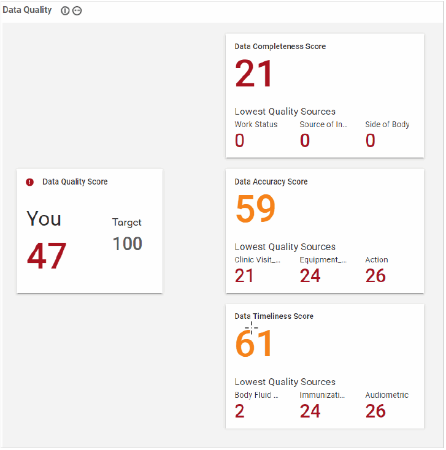
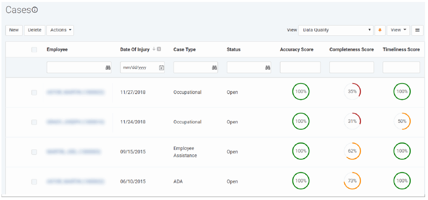

The Data Quality module monitors how well your safety data supports the predictive models, and identifies any issues so that you can take any necessary corrective actions to improve confidence in the predictions. The module measures the completeness and accuracy of your data, and calculates an overall data quality score. It also tracks how quickly data is entered into Cority.
In the Analytics menu, click Data Quality. You will see four scores, ranging from 0 to 100. These scores are calculated whenever the Data Quality module is opened, and cannot be edited. If a module does not contain any data, it is excluded from the calculations.
You can change the position of the score cards (remember to click and then Save).
The scores are color-coded to highlight whether the score is poor (red), good (orange) or excellent (green). These categories are defined as follows:
Red/Poor: score is less than 50
Orange/Good: score is equal to or greater than 50, but less than 80
Green/Excellent: score is equal to or greater than 80.

The individual scores are defined as follows:
Data Quality Score - Overall score calculated as (Completeness score x Accuracy score) / 100. For details about the calculations, refer to Working with Data Quality Scores on the Cority User Community.
Data Completeness Score - A measure of the degree of completeness of your safety data as it relates to the predictive models.
Each record is evaluated to identify the number of non-empty fields divided by the number of relevant fields (a record only requires one of its GDDLOFB fields to be populated in order for its Data Completeness Score to be calculated). This result is squared to arrive at a record score. The result favors situations where a minority of records have many empty fields vs situations where a majority of records have a few fields empty. The Data Completeness Score is then calculated as (sum of all record scores / count of all records) x 100.
Below the Data Completeness Score are displayed the Lowest Quality Sources; these are the three data sources that most negatively affect your overall data completeness score.
Data Accuracy Score - A rating of the accuracy of your safety data. The score is calculated as ((sum of records - inaccurate records) / sum of records) x 100.
Below the Data Accuracy Score are displayed the Lowest Quality Sources; these are the two data sources that most negatively affect your overall data accuracy score. Hover over a score card to see a description of each including how it is calculated.
Data Timeliness Score - The total average Timeliness Score of the data tables for which the Timeliness Score has been calculated. This score is out of 100, and is calculated using the following formula: ((Number of Optimal Days) / (Number of Actual Days)) * 100.
The Data Accuracy, Data Completeness and Timeliness scores may be added to a custom list or form layout, as follows:
